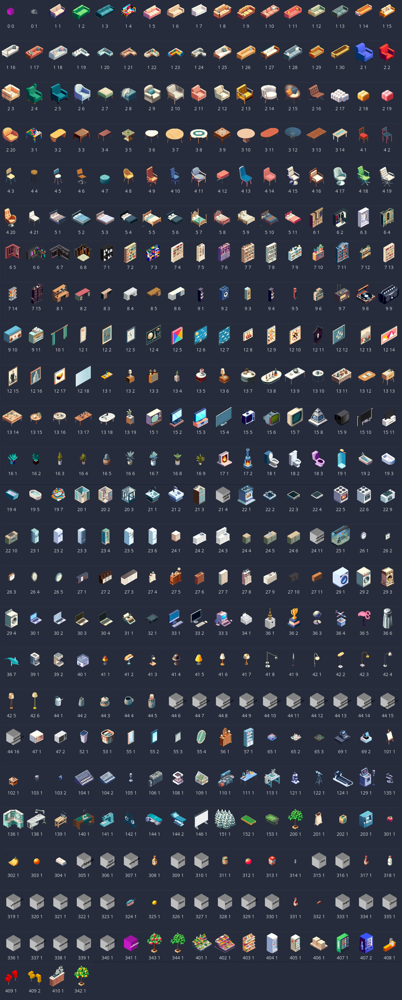

предметы мебели
Важно помнить, что сам по себе предмет мебели не несет никаких функций, он всего лишь спрайт с коллизией. Можно создать действие с участием этого предмета и тогда он будет использоваться.
contr.optFurns и contr.furns_all
Отныне есть два типа массивов с мебелью: contr.optFurns и contr.furns_all.
contr.optFurns глобальнее, чем contr.furns_all, и соответственно, менее поворотлив, поэтому плохо терпит любые изменения на лету. Обращаться к нему нужно по возможности как можно реже и стоит его использовать в основном в случае сохранения и загрузки игры.
contr.furns_all держит всю информацию о предметах, которые физически представлены в данный
момент на игровых чанках.
когда нужен contr.optFurns
|
когда нужен contr.furns_all
|
как происходит загрузка и сохранение
загрузкаКогда мы производим загрузку игрового сохранения, информация о всех предметах в мире из JSON записывается в contr.optFurns, затем идет сверка того, какие предметы по координатам попадают в границы игровых чанков и эти предметы дублируются в виде физических предметов в contr.furns_all. Все локальные изменения за время игры на чанке записываются только в contr.furns_all. |
сохранениеКогда мы производим сохранение игры или перезаход на другой чанк, информация о видимых предметах с прошлых чанков берется из contr.furns_all, предметы оттуда с соответствующими globalID перезаписываются внутри contr.optFurns (т.е. мы записываем более актуальную версию предметов, которые были на игровых чанках) и весь contr.optFurns записывается в сохранение JSON. |
виды мебели
В игре есть следующие спрайты (под каждым указание типа и вида). Также можно создать табличку с "адресом", т.е. номером дома.
